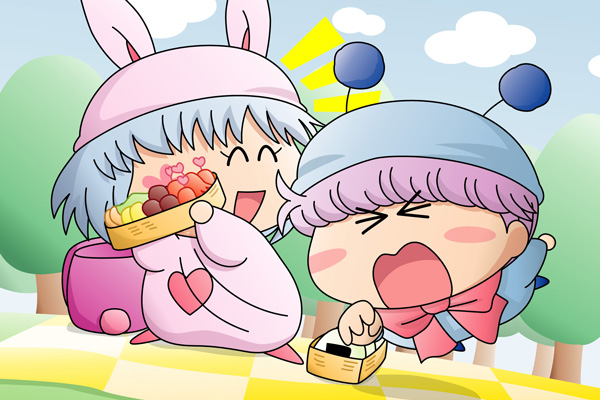

ムルモ「ほぇ～、パピィにしては上出来なお弁当でしゅね」
パピィが広げたお弁当には、おにぎりや、ミートボール、そしてタコさんウィンナーも入っていました。
パピィ「”パピィにしては”は余計よ！
はい、あ～～ん」
ムルモ「ボ、ボクは自分で食べるでしゅよ」
ムルモはタコさんウィンナーに手を伸ばしました。
ちょっとムッとしたパピィ。
無意識のうちにタコさんウィンナーの入ったお弁当箱をムルモから遠ざけていました。
パピィ「タコさんウィンナーはあたちが食べるのよ。
ムルモはおにぎり担当よ」
ムルモ「ほぇ、パピィが食べていいって言ったんじゃないでしゅか！
ボクは食べるでしゅよ！」
パピィ「だめよ、これはあたちのよ」
ムルモ「えいっ」
ムルモはもう一度タコさんウィンナーに飛びかかります。

パピィ「甘いわね」
ムルモ「何しゅるんでしゅか～っ」
パピィ「あたちから奪い取れたら食べてもいいわよ」
ムルモ「えーい、こうなったら…」
とムルモはパピィの腕を掴みました。
バランスを崩したパピィ。
お弁当箱が宙を舞います。そして…。
パピィ「きゃははは、ムルモの頭にタコさんウィンナー！」
ムルモ「…いったい何なんでしゅか」
パピィ「いい気味でちゅよ」
ムルモ「ボクを呼び出したのはこんなことをするためだったんでしゅか？」
パピィ「…はっ、あのそれは…」
ムルモ「最悪でしゅ。ボクはもう帰るでしゅ！」
怒ったムルモはパピィを残して飛んでいってしまいました。
パピィ「え……そんな、どうちて？」
まだ手を付けていないおにぎりと、一人残されたパピィ。
涙も出ずにただ呆然としていました。
お正月に掲示板で行ったアンケートでブレイドさんからいただいたリクエストを描きました。タコさんウィンナーを取り合う姿ですが、ちょっと違った絵になってしまったかも(^^;。（取り合いというか奪い合い？）
お話の方はまぁ予想通りの展開ですが、二人はケンカ無しではお互いの愛情が深まらないということで(^◇^;)。ケンカの原因はアニメではパピィが作ることの方が多かったので、絵の方もそうしてみました。
(2006/4/19)